Power BI бағдарламасында экономикалық деректерді модельдеу және визуализациялау
Жұмыстың мақсаты
Power BI бағдарламасында фактілер мен өлшемдер кестелеріне негізделген экономикалық деректер моделін құруды, Model View көрінісінде байланыстарды баптауды, иерархиялар қалыптастыруды және интерактивті аналитикалық есеп әзірлеуді меңгеру.
Жұмысты орындағаннан кейін студент мыналарды істей алуы тиіс:
- фактілер және өлшемдер кестелерін ажырату;
- фактілер кестесі негізінде өлшемдер кестелерін жасау;
- «жұлдыз» түріндегі деректер моделін құру;
- Model View көрінісінде «бірден-көпке» байланыстарын жасау және тексеру;
- байланыстардың белсенділігі мен сүзгілеу бағытын бақылау;
- күнтізбелік кесте мен иерархия жасау;
- деректерді егжей-тегжейлеу үшін иерархияны (drill-down) пайдалану;
- модель деректері бойынша диаграммалар құру және пішімдеу;
- сүзгілер мен срездерді қолдану;
- KPI көрсеткіштерін жасап, визуалды элементтерді интерактивті аналитикалық есепке біріктіру.
Қажетті материалдар
- Power BI Desktop;
- Financial Sample.xlsx негізінде № 10 зертханалық жұмыста дайындалған Power BI файлы;
- financials кестесі және дайындалған деректер.
Қысқаша теориялық мәліметтер
1. Деректер моделі және Model View
Деректер моделі кестелердің өзара әрекеттесу логикасын, есептеулердің дұрыстығын және сүзгілеудің жұмысын анықтайды. Model View көрінісінде пайдаланушы кестелер мен байланыстарды қарайды, байланыстарды жасайды және өңдейді, сүзгілеу параметрлерін баптайды, иерархияларды қалыптастырады және модель құрылымын басқарады.
2. Фактілер және өлшемдер кестелері
Фактілер кестесінде оқиғалар, операциялар және сандық көрсеткіштер сақталады. Өлшемдер кестелерінде талдау объектілерін сипаттайтын анықтамалық және санаттық деректер болады: елдер, тауарлар, сегменттер, уақыт кезеңдері және басқа санаттар.
3. Жұлдыздық схема және байланыстар
Жұлдыздық схемада фактілер кестесі орталықта орналасып, өлшемдер кестелерімен байланысады. Негізгі байланыс түрі — «бірден-көпке»: «1» жағы өлшемдер кестесінде, ал «*» жағы financials кестесінде орналасады. Әдетте бірбағытты сүзгілеу қолданылады; екібағытты сүзгілеу тек негізделген қажеттілік болғанда пайдаланылады.
4. Иерархиялар және визуализация
Иерархия drill-down көмегімен жалпы деңгейден егжей-тегжейлі деңгейге өтуге мүмкіндік береді. Визуализация түрі талдау міндетіне сәйкес болуы керек: бағандық диаграмма санаттарды салыстыруға, сызықтық диаграмма динамиканы көрсетуге, KPI ағымдағы көрсеткішті мақсатты немесе салыстырмалы көрсеткішпен салыстыруға арналған.
Практикалық жағдай
№ 10 зертханалық жұмыста деректер дайындалғаннан кейін аналитик Financial Sample жиынтығын құрылымдалған аналитикалық модельге айналдырып, компанияның қаржылық көрсеткіштерін талдауға арналған интерактивті есеп жасауы керек. Нәтиже — деректер моделі және «Қаржылық көрсеткіштерді талдау» атты есеп беті.
Жұмысты орындау тәртібі
1-тапсырма. Өлшемдер кестелерін жасау
- № 10 зертханалық жұмыста дайындалған Power BI файлын ашыңыз.
- Home → Transform data бөліміне өтіңіз.
- financials сұрауы негізінде Segment үшін өлшемдер кестесін жасаңыз: сұрауды көшірмелеңіз, тек Segment бағанын қалдырыңыз, қайталанатын жазбаларды жойыңыз және сұрауды Dim_Segment деп атаңыз.
- Сәйкес бағандарды пайдаланып, Dim_Country, Dim_Product және Dim_DiscountBand кестелерін дәл осылай жасаңыз.
- Close & Apply батырмасын басып, кестелердің модельде қолжетімді екенін тексеріңіз.
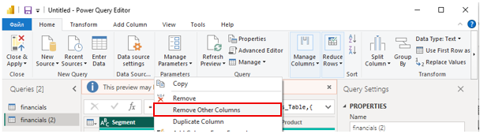
11.1-сурет – Өлшемдер кестесін қалыптастыру: басқа бағандарды жою
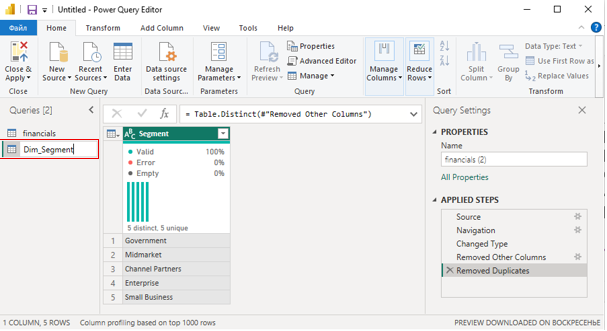
11.2-сурет – Өлшемдер кестесінің атауын өзгерту
2-тапсырма. «Жұлдыз» моделін құру
- Model View көрінісіне өтіңіз.
- Financials, Dim_Segment, Dim_Country, Dim_Product және Dim_DiscountBand кестелерінің бар екенін тексеріңіз.
- Financials кестесін ортаға, ал өлшемдер кестелерін айналасына орналастырыңыз.
- Атаулары бірдей кілттік өрістер бойынша байланыстар жасаңыз. Егер Power BI байланыстарды автоматты түрде құрса, алдымен параметрлерін тексеріңіз; қажет болғанда ғана жойып, қайта жасаңыз.
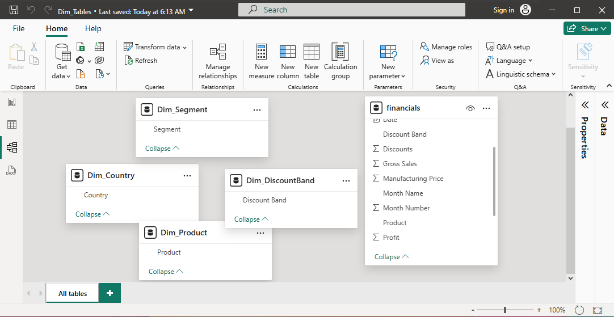
11.3-сурет – Model View көрінісі
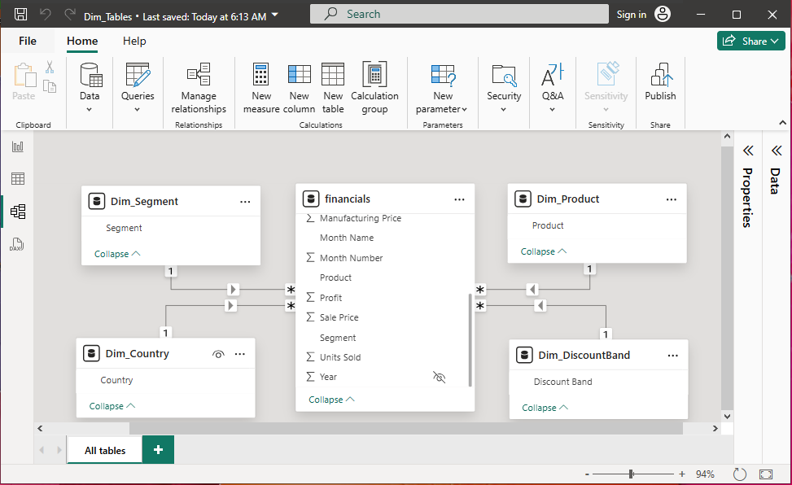
11.4-сурет – Star Schema схемасының мысалы
3-тапсырма. Байланыс параметрлерін тексеру
- Әр байланыс үшін параметрлерді ашыңыз.
- «Бірден-көпке» (1:*) кардиналдылығын тексеріңіз: өлшемдер кестесі «1» жағында, Financials «*» жағында болуы тиіс.
- Байланыстың белсенді екенін тексеріңіз.
- Сүзгілеу бағытын тексеріп, басқа нұсқаға негізделген қажеттілік болмаса, бірбағытты сүзгілеуді қолданыңыз.
- Соңғы модельдің скриншотын жасаңыз.
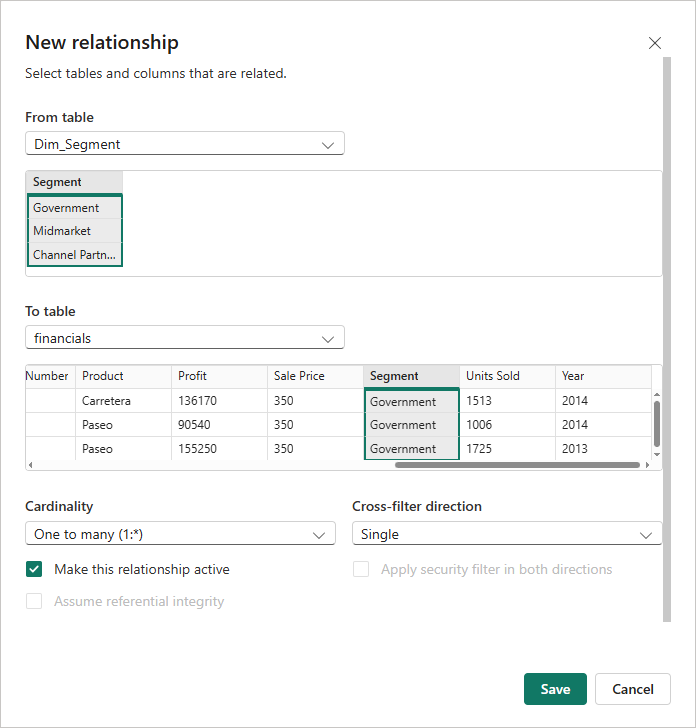
11.5-сурет – Кестелер арасындағы байланысты баптау
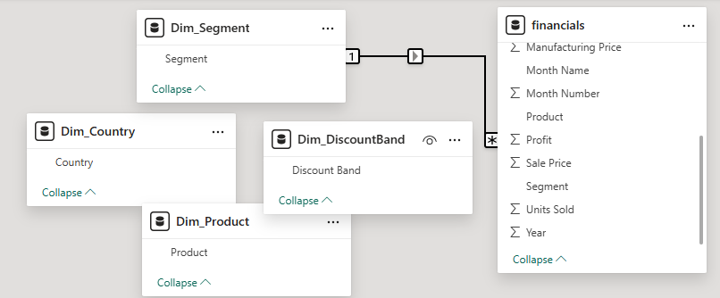
11.6-сурет – Сүзгілеу бағытын тексеру
4-тапсырма. Күнтізбелік кесте мен иерархия жасау
- Home қойындысында Enter Data пәрменін таңдаңыз.
- Financial Sample деректеріндегі кезеңдер үшін Year, Month Number және Month Name өрістері бар Dim_Date кестесін жасаңыз.
- Dim_Date кестесін жүктеп, қолжетімді күнтізбелік кілт бойынша фактілік деректермен дұрыс байланыс орнатыңыз.
- Dim_Date кестесінде Year өрісінен басталатын иерархия жасап, Month Number және Month Name өрістерін қосыңыз.
- Month Name өрісін Month Number бойынша сұрыптаңыз.
- Егжей-тегжейлеу мүмкіндігі бар визуализацияда иерархияны тексеріңіз.
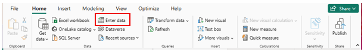
11.7-сурет – Dim_Date жасауға арналған Enter Data пәрмені
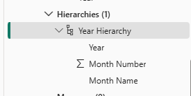
11.8-сурет – Иерархия жасау
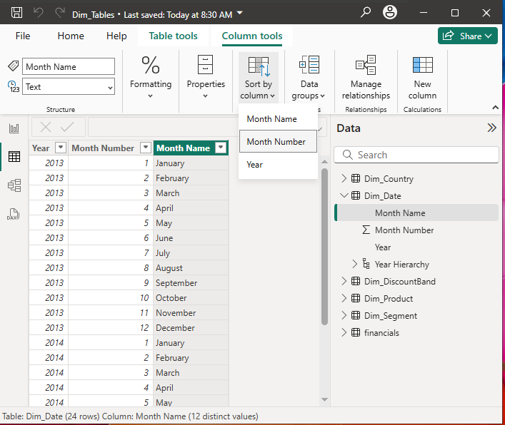
11.9-сурет – Ай атауларын сұрыптау
5-тапсырма. Елдер бойынша пайданы талдау
- Report View көрінісіне өтіңіз.
- Clustered Bar Chart диаграммасын қосыңыз.
- Country өрісін санаттық оське, Profit өрісін мәндер аймағына орналастырыңыз.
- Profit агрегатталуын тексеріп, қажет болса Sum функциясын қолданыңыз.
- Диаграмма тақырыбын, белгілерін және оқуға ыңғайлы безендірілуін баптаңыз.
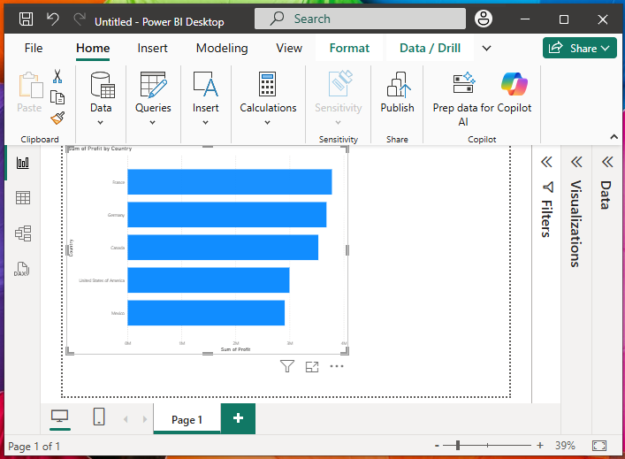
11.10-сурет – Profit by Country бағандық диаграммасының мысалы
6-тапсырма. Интерактивті сүзгілеуді қосу
- Есеп бетіне Slicer қосыңыз.
- Segment өрісін срезге орналастырыңыз.
- Segment өрісінің бір немесе бірнеше мәнін таңдап, диаграмманың өзгеруін бақылаңыз.
- Slicer әрекетін жеке визуализацияға қолданылған сүзгімен салыстырыңыз.
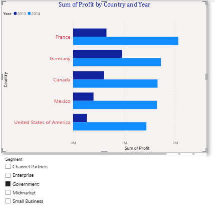
11.11-сурет – Slicer қосу нәтижесі
7-тапсырма. Сату динамикасын және drill-down мүмкіндігін талдау
- Сызықтық диаграмма қосыңыз.
- Уақыт осі үшін Dim_Date иерархиясын, талданатын көрсеткіш ретінде Sales өрісін пайдаланыңыз.
- drill-down арқылы уақыттың жалпы деңгейінен егжей-тегжейлі деңгейіне өтуді тексеріңіз.
- Айлардың реті әліпбилік емес, Month Number мәндеріне сәйкес екенін тексеріңіз.
8-тапсырма. KPI жасау
- KPI визуализациясын қосыңыз.
- Gross Sales өрісін Value аймағына орналастырыңыз.
- Sales өрісін Target аймағына орналастырыңыз.
- Trend axis үшін Date немесе Dim_Date күнтізбелік өрісін қолданыңыз.
- Визуализацияны пішімдеп, сүзгілер қолданылғанда өзгеруін тексеріңіз.
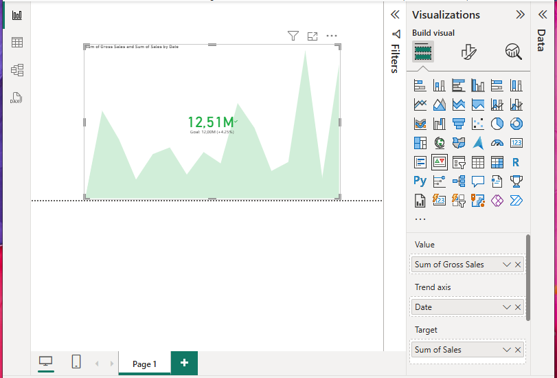
11.12-сурет – KPI құру мысалы
9-тапсырма. Интерактивті аналитикалық есеп қалыптастыру
- «Қаржылық көрсеткіштерді талдау» атты есеп бетін жасаңыз.
- Бетке Profit by Country диаграммасын, Sales динамикасының графигін, KPI және Segment срезін орналастырыңыз.
- Қажет болса, Product бойынша екінші срезді қосыңыз.
- Элементтерді бір-бірінің үстіне түсірмей, бетті шамадан тыс толтырмай орналастырыңыз.
- Тақырыптар, жазулар және сандық пішімдер үшін бірыңғай стиль қолданыңыз.
10-тапсырма. Өзара әрекеттесуді тексеру және аналитикалық қорытындылар
- Segment таңдауының беттегі визуализацияларға әсерін тексеріңіз.
- Диаграммалар мен срездердің өзара әрекеттесуін тексеріңіз.
- Уақыттық визуализациядағы drill-down жұмысын тексеріңіз.
- Сүзгілерді тазалап, есептің толық деректер жиынтығына оралғанына көз жеткізіңіз.
- Есеп бойынша 3–5 қысқаша аналитикалық қорытынды тұжырымдаңыз.
- Соңғы Power BI файлын (.pbix) сақтаңыз.
Жұмыс нәтижесіне қойылатын талаптар
- № 10 зертханалық жұмысты жалғастыратын Power BI (.pbix) файлы.
- Dim_Segment, Dim_Country, Dim_Product және Dim_DiscountBand кестелері.
- Байланыстары тексерілген дұрыс жұлдыздық схема.
- Dim_Date күнтізбелік кестесі және уақыт иерархиясы.
- Profit by Country бағандық диаграммасы.
- drill-down мүмкіндігі бар Sales динамикасының сызықтық диаграммасы.
- Gross Sales / Sales / Date оқу конфигурациясы бойынша KPI.
- Segment срезі және визуалды элементтердің дұрыс өзара әрекеттесуі.
- Оқуға ыңғайлы «Қаржылық көрсеткіштерді талдау» есеп беті.
- Model View, байланыс параметрлері, иерархия және есептің соңғы беті көрсетілген негізгі скриншоттар.
- 3–5 аналитикалық қорытынды.
Бақылау сұрақтары
- Power BI деректер моделі дегеніміз не?
- Фактілер кестесінің өлшемдер кестесінен айырмашылығы қандай?
- Жұлдыздық схема дегеніміз не?
- Model View қандай қызмет атқарады?
- «Бірден-көпке» байланысы нені білдіреді?
- Power BI автоматты түрде құрған байланыстарды неге тексеру қажет?
- Сүзгілеу бағыты модель жұмысына қалай әсер етеді?
- Жеке күнтізбелік кесте не үшін жасалады?
- Деректер иерархиясы дегеніміз не?
- drill-down не үшін қолданылады?
- Срездің жеке визуализация сүзгісінен айырмашылығы қандай?
- Визуализация түрі неге аналитикалық міндетке сәйкес болуы тиіс?
Бағалау критерийлері
Бағалау критерийлері
| Критерий | Балл |
|---|---|
| Өлшемдер кестелерін жасау | 15 |
| Жұлдыздық схеманы құру және рәсімдеу | 15 |
| Байланыстар мен сүзгілеу параметрлерінің дұрыстығы | 10 |
| Dim_Date және иерархия жасау | 10 |
| Пайданы талдау диаграммасы | 10 |
| Динамиканы талдау және drill-down | 10 |
| KPI | 10 |
| Срездер және интерактивті өзара әрекеттесу | 5 |
| Аналитикалық есептің орналасуы | 10 |
| Аналитикалық қорытындылар | 5 |
| Барлығы | 100 |
Нәтижелеріңізді тексеріп, зертханалық жұмысқа арналған интерактивті тестке өтіңіз.
Біліміңізді тексеріңіз
Орындаған зертханалық тапсырма бойынша сұрақтарға жауап беріңіз. Әр сұраққа бір дұрыс жауапты таңдаңыз.